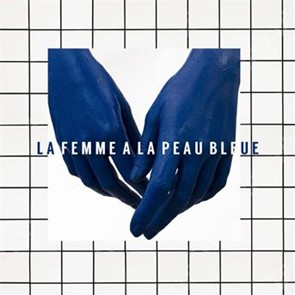

Il était minuit, minuit passé. C'était pas l'ennui, j'étais un peu fatigué. J'ai pris un dernier verre, puis une cigarette. Les lumières dansaient, elles éclairaient ses yeux. C'était les reflets d'une femme à la peau bleue ...
J'ai cru reconnaitre ma grand-mère Claudine ....
J'ai crié *"MAMY C'EST TOIIIIIII ?"*.
---
**Maître developpeur**, sur sa _branche_ perché venait d'_add_ à celle-ci du contenu !
**Junior dev**, ne comprenant pas les cernes qu'il avait sous les yeux lui tint à peu près ce _langage_:
```javascript
while (alive) {
eat();
sleep();
code();
repeat()
}
```

** après cet interlude publicitaire, nous allons retourner à notre programme habituel.**
Mais ce n'était pas ma grand-mère, loin de là.
allez encore un :innocent:
*Qui s'endort avec le cul qui gratte, se réveille avec le doigt qui pue. Moralité: ne remet pas à demain ce que tu peux faire aujourd'jui.*
Ce n'était pas ma grand-mère en effet ! Mais bien mon grand-père. J'en venais à me demander si mon dernier verre n'était pas celui en trop.
c3ce72702f22b9b00c8d96192a86ef3aea96430e